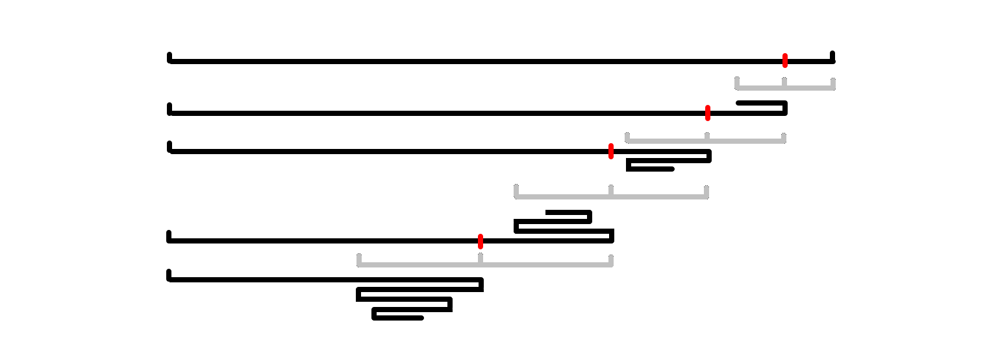

Banknote Collection 命题报告
文章目录
本来是没有打算写命题报告的。不过在讨论的过程中发现，这题似乎的确有一定的难度。于是就有了本文。
题目大意
给出一个长度为的正整数序列。我们可以折叠序列。例如可以折叠为
3-4╮
╭2-3-4╯
╰2-3-4-1-3-1╮
1╯它可以被折叠次。再举一个例子，可以被折叠次：
1╮
╭1╯
╰1╮
╭1╯
╰1╮
1╯形式化地，我们定义的一个折叠序列是长度为的整数序列满足：
- 仅由和构成，且；
- 设。则对于任意且，必满足。
显然，可能有多个不同的都满足的折叠序列条件。
定义折叠序列的折叠次数为。那么的最大折叠次数定义为所有合法的折叠序列中的最大值。
现在 Boboniu 正操纵着一个序列。初始时长度为。他会执行次操作，每次他会在末尾加入一个元素。他想知道每次插入元素后，的最大折叠次数。
。
从左到右
在讨论算法的过程中，我们把序列理解为一个字符集较大的字符串。这样解释起来方便一些。
另外，本文中所有的回文，一般情况都指偶回文。
在开始讨论关于此题的算法之前，我想讲述关于折叠操作的一些直观理解。大家可以想象，你拿着一张纸条做各种各样的折叠。比如对折再对折：
但是其实这种折叠方式（在本题中），等价于你做一个 Z 字型（或者说 M 字型）的折叠：
因为在本题中的折叠次数，实际上指的是折痕的数量。而两种折叠方式的折痕数量是一样的。
考虑一个更具体的例子：。我们分别按照以下两种方式折叠：
（红色表示折叠的位置）
实际上，两种折叠方式折出来是等价的。你把第二种折叠方式的外面那个圈收到里面来，就变成了第一种折叠方式：
观察第一种折叠方式，它始终呈 Z 型折叠，并且它是按照从左到右的顺序依次折过来的。也就是说我们得到了两个关键信息：
Key point 1：任意一种折叠方案，都可以通过改变圈的位置，变成 Z 型折叠。
Key point 2：任意一种折叠方案，只要折到了不能继续折下去的程度，那么得到的折痕数量是始终相等的。
也就是说我们把原本的任意折叠，归约成了从左到右依次折叠。
从左到右依次折叠还有一个好处：每次都只折了一层纸。如果随意折叠，就可能会出现折多层纸的情况，这时的折叠次数就要多次计算。比如在上述例子中，第二种折叠方式的第二次折叠就一次折了 3 层纸，因此折痕数量加 3。也就是说，如果我们从左到右折叠，那么只用考虑折叠的次数，不用考虑每次折叠的层数。
这部分希望大家自己动手折叠一下，先理解直观的感受。
接下来，我们就按照从左到右的顺序讨论关于本题的算法。
三折
考虑中的三个。我们一定会把他们折成一个（次折叠，Z 型）。假设你不折，那么最终的方案里一定含有的子串。于是你就可以再折次来获得更多折痕。
推广之，考虑三个连续的字符串，其中是的反串。那么我们可以贪心地把它们折成一个：
我们称形如（其中是的反串）的字符串为三折。
另外，我们定义最简三折为一个形如的字符串，满足它不存在三折真子串。
根据 Key point 2，我们有一个大致的思路：先把所有能折的三折给折了，剩下一个没有三折的串，再来折这个串。具体地，我们分为两个部分：
- 考虑字符串，初始时为空串。我们执行次操作，每次在末尾插入，然后检查是否产生了新的三折，有就折，没有就不折。
- 对于一个没有三折的串，我们要求出它还能被折多少次。
那么我们只需要在每次做第一步后做第二步，就可以求出每次操作完之后的答案了。
Easy Version
第一部分
设末位插入后变成了。
首先我们证明一个引理，这在之后的复杂度证明中都会发挥作用。
Lemma 1：对于一个串的两个偶回文子串，，如果包含的中心且包含的中心，那么一定包含三折子串。
证明
不妨设，。那么通过简单的构造可以发现：
这样就产生了三折。证毕。
Key point 3：至多有一个三折。
证明
证明：考虑反证法。
首先，的三折一定是它的后缀，因为没有三折。
那么如果产生了多个三折后缀，有三种情况：
黑和红：这种情况很容易反证。在第一个里也会出现一个三折，那么中就含有三折了，矛盾。
黑和蓝、黑和绿：可以发现，蓝色的和黑色的形成了 Lemma 1 的情况，绿色的和黑色的也形成了 Lemma 1 的情况。因此中含有三折，矛盾。
证毕。
由 Key point 3 我们还可以发现，这个三折一定是最简三折。
因此我们使用一些算法找到这个三折后，把它折叠。折叠的过程就是删掉的一个偶回文后缀。如果找不到三折，就不变。
第二部分
对于一个没有三折的串，我们要求出它还能被折多少次。
没有三折，我们就只能对折——也就是把一个偶回文前缀或者偶回文后缀折叠。
考虑贪心，以偶回文后缀为例，我们每次折叠最短的偶回文后缀。那么每次折叠的后缀长度一定是严格递增的：

因为如果不递增，那么就会出现 Lemma 1 的情况，导致出现三折，矛盾。
因此折叠出来的应该大致是这个样子：
Key point 4：对于没有三折的串，最多被折叠次。
- 对于偶回文后缀的折叠 ：设表示的最短偶回文后缀。
- 对于偶回文前缀的折叠：设表示，在串上从开头开始折叠，每次折叠最短偶回文前缀，最多能折叠到什么位置。设表示前缀的折叠次数。
算法描述
我们使用 hash 来处理两个部分。
找三折：对于每个后缀判断是否是偶回文后缀，如果是，就判断是否构成三折。时间复杂度的。
当变成时：
- 如果没有出现三折，那么我们就求出，然后地求出（基于）。然后我们可以更新字符串的 hash。
- 否则我们要删除的后缀，那么我们直接舍弃那部分的后缀对应的和 hash 值即可，时间复杂度。
回答询问：我们可以查询，查询来回答询问。
总时间复杂度。
Hard Version
为了让获得更快的算法，我们需要挖掘更多有关三折的性质。
第一部分
我们需要优化找三折的复杂度。
Key point 5：最简三折只有一个偶回文后缀（就是的）。
这个同样可以反证，并结合 Lemma 1 导出矛盾。
根据 Key point 3，我们发现，的三折一定由它的最短偶回文后缀产生。因此我们只需要快速找到的最短偶回文后缀，然后看它是否构成三折即可。
Key point 6：的偶回文后缀数量是的。
因为的偶回文后缀不能出现 引理 1 的情况，所以必须是一个包含另一个，且不跨过中心。那么偶回文后缀的长度每次至少倍增：
设表示的偶回文后缀的集合。由于的大小是的，因此可以使用 vector 维护。于是
- 找最短回文后缀的复杂度就是的。
- 判断一个串是否是三折，可以转化为判断一个子串是否是回文串，同样可以判断。
- 在末尾插入的时候，可以枚举的偶回文后缀，求出，时间复杂度。
如果找到了一个三折，就删掉的一个偶回文后缀。
这样，找三折以及更新的复杂度就优化为了。
第二部分
沿用 easy version 的算法，单次询问的复杂度仍是，可以通过本题。
算法描述
找三折：在中查询最小值，时间复杂度。
当变成时：
- 如果没有出现三折，那么我们就求出，然后地求出（基于）。然后我们可以利用求出。
- 否则，我们要删除的后缀，直接舍弃对应变量即可。时间复杂度。
回答询问：我们可以查询，查询来回答询问。
总时间复杂度。
数据
首先肯定有随机数据，然后还要有一些 corner 的情况，还有的没有三折数据。
验题的时候，丁神在比赛开始前一晚，写了一个暴搜剪枝过了。当时把我吓傻了，然后就赶紧研究了一下，hack 掉了这个暴搜。生成器长这样：
cur = 3
a = [1,1]
for i in range(3,17):
b = a.copy()
a.append(cur) # new fuck
cur += 1
a.reverse()
a.extend(b) # link
a.append(cur) # fuck
a.reverse()
print(len(a))
a.reverse()
for x in a:
print('{} '.format(x),end='')修订记录
- 2021年2月4日 第2次修订
- 2020年8月23日 创建文章